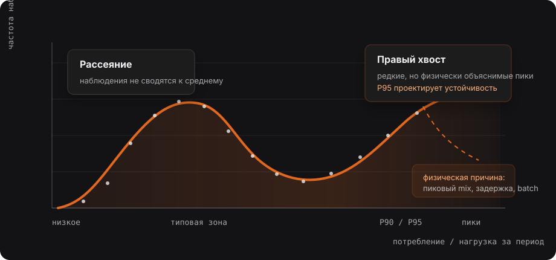

Примечательность ошибки среднего уже отмечалась в рамках текста «Некоторые методы и правила проектирования процессов внутренней логистики автомобильного производства». Этот обучающий модуль призван более подробно раскрыть тему и помочь технологам и инженерам логистики, проектирующим процессы и материальный поток, правильно использовать методологию и иметь понимание о подходах, которые автор считает оптимальными. Автор предполагает, что изыскатель уже ознакомлен с вышеупомянутым текстом и имеет понимание, как использовать словарь. Впрочем, любой из Модулей может выступать и как самостоятельный блок.
Инженерная проблема – краткий контекст §
Понедельник. 9:45 остановка производственной линии. Ответственный сотрудник (например, диспетчер) на телефоне. Водитель тягача мчится на линию в обход установленного маршрута и сменного листа пополнения. На складе отрывают табличку Excel, а в ней числа, которые говорят, что компонента на линии должно хватать. Начинается разбор. Технолог, ответственный за участок приступает к анализу. Открывает файл с расчетом Kanban: потребление – 47 единиц в час, именно на основе этой цифры рассчитан цикл снабжения, количество карточек Kanban, объем запаса, частота пополнения. Все верно. Формулы в ячейках не съехали. В прошлом месяце проблем не было.
Только сегодня, с 8:00 до 9:00, потребление составило 83 единицы в час. Это произошло не потому, что кто-то допустил ошибку, а потому что в этот день на линии собирали автомобиль с определенной опцией, которая встречается в среднем в 20% случаев, а сегодня в 68%. Система спроектирована по среднему. Поток оказался не средним. Это не разовый инцидент. Это системная ошибка проектирования, которая с высокой регулярностью воспроизводится на любом производстве, где расчеты начинаются с вопроса: «Какое у нас среднее потребление?»
Среднее значение — удобная штука. Компактное, легко воспринимается на совещаниях, под него легко сделать расчет, но у него есть один серьезный недостаток: оно не описывает ни один из реальных дней работы системы. Не работала и не будет работать система «в среднем». Она будет работать в понедельник, во вторник, в пятницу перед праздниками, и в каждый из этих дней поток будет иным.
Проблема, разбираемая в этом модуле, состоит не в формулах. Проблема в том, что инженеры, которые хорошо умеют считать, проектируют системы под число, которого нет в природе. Цель этого модуля – перенести вопрос с уровня «каково среднее?» на уровень «какова структура отклонений?»
Почему мышление через среднее вводит в заблуждение §
Среднее значение — это математически корректный способ описать набор чисел одним числом. Оно отвечает на вопрос «что происходило за период?», но не подходит для ответа на вопрос «что произойдет через час?». Инженер по логистике работает со вторым вопросом.
Моделируем ситуацию: среднее потребление компонента на протяжении недели 50 шт. в час. Цифра приятная и удобная. Капнем глубже. В понедельник 28 шт., во вторник 45 шт., в среду 71 шт., в четверг 38 шт., в пятницу 68 шт. В день, когда потребление 28 шт., буфер, рассчитанный по среднему, избыточен и, скорее всего, занимает площадь. В день, когда потребление 71 шт. буфер был опустошён на 3 часу смены. «В среднем» система справляется, а в конкретный день, увы нет. Это называется эффектом сглаживания. Два дня с потреблением 20 и 80 дадут то же среднее значение, что и пять дней с потреблением по 50, но поведение системы в эти дни совершенно разное. Управленческое решение, принятое на основе среднего значения, является «верным» только для несуществующего среднего дня.
Почему среднее используют? Потому что это удобно. Его легко получить, оно понятно всем, под него легко рассчитать любое решение, и здесь проблема не в плохих намерениях, в том, что удобство не закрывает проблему неприменимости. Среднее просто не подходит для этой задачи. Система разваливается не в средний день, она разваливается при пиковых сценариях – в пятницу, в первый понедельник после праздников, в день, когда производственный mix вдруг сместился. Эти дни среднее и скрывает. Есть еще один побочный эффект: когда система спроектирована по среднему, она постоянно нагружает операционный персонал необходимостью компенсации отклонений (аварийные рейсы, ручные перемещения, телефонные звонки и чаты, пятиминутки по 30 минут, которые ничего не меняют). Эту работу скрывают отчеты, она просто «решается оперативно». Отсюда иллюзия нормально работающей системы, хотя фактически она находится в ручном управлении.
Ключевые понятия §
Этот раздел не ставит перед собой задачи дать полноценный курс статистики, я попробую передать минимальный набор понятий, без которых невозможно задать правильные вопросы при проектировании логистической системы.
Среднее значение
Среднее значение ни что иное как сумма всех наблюдений, деленная на их количество. Этот показатель корректно описывает систему всего при одном условии – все наблюдения сосредоточены вблизи этого значения, а отклонения малы или симметричны. В производственной логистике это условие практически никогда не выполняется. Потребление деталей, время доставки, интенсивность маршрута снабжения имеют структуру, в которой отдельные дни или смены существенно отличаются от среднего.
Медиана
Медиана – это значение, которое делит весь ряд наблюдений пополам: половина дней со значением выше, половина со значением ниже. Если медиана заметно отличается от среднего, значит вы наблюдаете сигнал, который говорит вам: «в данных есть редкие, но сильные отклонения (так называемые «хвосты»), которые тянут среднее вверх или вниз».
Пример: 95 дней потребление детали составляет 40-60 шт. в час, а 5 дней – 110-130 шт. в час. Среднее может быть 48, а медиана 47, но в 5 днях с «хвостами» система, рассчитанная на 48 шт. в час, будет работать при дефиците компонента. Медиана помогает увидеть, что «типичный» день отличается от «исключительного».
Распределение
Распределение — отражение того, как часто встречается каждое из значений. Если нарисовать столбчатую диаграмму, где по оси X будет отражено потребление, а по оси Y – дни проведения наблюдений, мы получим форму распределения. Эта форма расскажет больше, чем любое одиночное число, но чтобы читать ее правильно, важно разграничить три характеристики, которые она описывает, а это три разных явления. Путаница между ними приведет к тому, что восприятие формы как «нормальной» будет скрывать в системе, уже содержащееся требование к запасу. Среднее и медиана описывают центр формы, то, вокруг чего группируются большинство результатов наблюдений. Сами по себе они не описывают ни ширину, ни асимметрию.

Рассеяние – ширина формы. Оно показывает, насколько далеко наблюдения расходятся от центра. Узкое распределение означает, что потребление в большинстве дней наблюдения близко к центральному значению. Широкое показывает значительный разброс между днями. Два распределения с одинаковым средним могут радикально различаться по ширине, естественно, предъявляя системе разные требования. С помощью рассеяния инженер масштабирует ответ на вопрос «насколько большим должен быть буфер, чтобы покрывать не только типичный день, но и обычное отклонение от него».
Хвост – асимметрия формы: одна сторона обрывистая, вторая пологая и длинная. Распределение может быть узким и при этом иметь хвост, или слишком широким и при этом оставаться симметричным. Все это независимые характеристики, и путать их, значит упускать из вида разные классы требований к системе.
В производственной логистике хвост почти всегда направлен вправо, так потребление деталей, время доставки, нагрузка на маршрут имеют жесткий нижний предел: ноль. Деталь не может быть потреблена «- 15 раз», но сдвиг mix сборки, концентрация определенной опции или задержки, связанные с доставкой материала, могут кратно превышать среднее. Именно правый хвост, а не центр и не рассеивание, является проектной границей для буферов, резервных мощностей и триггеров пополнения. Хвост является областью редких, но реальных событий, которые система обязана поглотить.
Вариативность
Вариативность не должна восприниматься, как шум или случайность, которую необходимо привести к среднему. Вариативность является конструктивным свойством системы, которое определяет, насколько разными могут быть условия работы в разные дни, смены, часы. В процессах внутренней логистики имеет конкретные физические источники: mix производственной последовательности, непостоянство производственного ритма, неравномерное производство опциональных моделей, нестабильный LT поставщика.
Примеры §
Kanban, рассчитанный по среднему потреблению
Классическим примером, который воспроизводится на десятках производств можно считать расчет инженером размера петли (или цикла, если угодно) Kanban (количество карточек, объем каждого контейнера, частота маршрута). Такой расчет строится на среднем потреблении в час, умноженном на LT пополнения с небольшим коэффициентом.
Возьмем деталь, например, стекло боковой двери с определенным уровнем тонировки. Среднее потребление равно 12 шт. в смену, LT пополнения от супермаркета до BOL (Border of Line) равна 25 минутам. Рассчитан буфер 3 контейнера по 4 единицы материала в каждом, итого 12 шт. у линии, чего «в среднем достаточно». Открываем данные за последние три месяца. Из 65 рабочих смен в 11 потребление превышало 22 шт., в 4 сменах составило 28-31 шт. Это тот самый хвост, 6-17% смен, когда буфер в 12 шт. физически не покрывал потребность даже на половину смены. Именно в эти смены фиксировались аварийные рейсы доставки материала, которые объяснялись как «нестандартные ситуации».
Нестандартными они были только с точки зрения человека, который проектировал этот процесс посредством средних значений. С точки зрения распределения они регулярные, они происходят каждую седьмую-восьмую смену. Буфер должен быть рассчитан на 90-й или 95-й перцентиль потребления. Это другая цифра и другая петля Kanban.
Как именно вариативность потребления разрушает параметры цикла снабжения в Pull системах разобрано в Модуле 2, раздел 6.
Milk Run «по среднему» и пиковая нагрузка
Маршрут Tugger-Train (в практике часто называемый Milk Run, молочный рейс) был спроектирован из расчета средней загрузки: 18 HU за рейс, цикл 22 минут, 5 маршрутов в смену. Тягач загружен примерно 75% от номинальной мощности. По расчету комфортный резерв. Реальность выглядит иначе, профиль потребления у линии неравномерен: первые 2 часа смены после запуска высокая интенсивность, середина смены – стабильная, последний час снова всплеск. В первые 2 часа маршрут должен доставить не 18, а 28-30 HU за рейс, а это за пределами физической вместимости поезда. В результате каждый понедельник и в начале каждой смены операционная логистика видит одну и ту же картину: стеллажи полупустые, маршрут не исполняется вовремя, ручная диспетчеризация в режиме высокой нагрузки и ответственности. У операторов складывается впечатление, что «тягач не успевает», но проблема не тягаче. Проблема в расчете под средний рейс доставки.
Правильный расчет маршрута включает анализ почасового профиля нагрузки, а не только среднесменного. Если система должна обслуживать линию в первые два часа смены с пиковым объемом, значит именно этот объем является проектным параметром маршрута.
JIS и вариативность производственной последовательности
JIS является одним из самых требовательных концептов снабжения производственной линии. Склад собирает крупногабаритные компоненты (например, сиденья) точно в той последовательности, в которой они будут устанавливаться, доставка осуществляется в жестком временном окне. Любое несоответствие между последовательностью поставки и последовательностью сборки равна минимум ошибке комплектации. С точки зрения Lean этот концепт выглядит совершенным, но это пока производственная последовательность стабильна. Стабильность здесь имеет конкретное значение: доля автомобилей, которые поменяли порядок в плане сборки в пределах горизонта поставки материала, должна быть ниже критического порога. В практике автопрома это значение составляет 2-4% изменений относительно горизонта JIS LT.
Пример: Цех окраски имеет собственный уровень дефектов, часть кузовов уходит на доработку, выпадая из последовательности и возвращаясь через несколько часов. Допустим это значение равно 3%. На самом деле это показатель с высокой вариативностью, в «хороший» день может составлять 1%, в «плохой» 7% или 9%. Среднее значение находится в допустимой зоне, а вот значение тех самых 5-10% «плохих» дней увы, нет. Именно в эти дни JIS ломается. Сиденья приходят в правильной последовательности, но необходимого VIN на станции установки сидений нет, кузов на доработке, будет только через 2 часа. Так вот, JIS работает не потому, что средний показатель в норме, а потому что показатель стабильности в пределах допустимого значения, которое вам покажет только распределение.
Здесь важно понимать, что JIS сломался не из-за неудачной конфигурации IT системы, или неверных действий операционных сотрудников склада. Поломка произошла потому, что концепт был выбран без анализа хвоста распределения стабильности последовательности. Это ошибка проектирования, а не эксплуатации.
Операционные последствия этой ошибки, а именно что делает система при нарушении устойчивости и какой показатель это измеряет, рассмотрены в Модуле 3, раздел 4.2
Проверка на собственных данных
Следующий блок не заменяет промышленный расчёт Kanban, буфера или транспортной мощности. Он нужен для первичной диагностики: увидеть разницу между средним, медианой, P90/P95 и реальными пиковыми наблюдениями.
Диагностика ошибки среднего
Введите ряд наблюдений через запятую, пробел или новую строку. Например: потребление за смену, заявки за интервал, минуты lead time или количество HU.
Введите наблюдения, чтобы получить инженерный вывод.
Связь с методом 9 слоёв §
Вышеназванная методология задает последовательность, в которой решения принимаются и ограничения передаются между уровнями. «Ошибка среднего» не является ошибкой одного слоя, это сквозная методологическая ошибка, которая входит в систему на втором слое и затем искажает каждый следующий. Попробуем оценить ее влияние.
Слой 2 – Входы и планирование. Если потребность описана как среднесуточный или среднечасовой объем без анализа профиля вариативности, это значение становится исходным для всех последующих расчетов. PFEP формируется с параметрами, которые корректны только для несуществующего «среднего дня».
Слой 3 – Объекты и мастер-данные. Параметры пополнения, размер буферов, частота подачи – все это производные от потребления. Если потребление зафиксировано как среднее, мастер-данные содержат системную ошибку, которую сложно выявить при первичном расчете.
Слой 5 – Хранение. Ёмкость слотов (ячеек хранения), размеры зон, параметры буферов на линии рассчитываются под средний поток. В дни с пиковым потреблением или нестандартным mix последовательности зоны переполняются, либо опустошаются раньше расчетного времени.
Слой 6 – Снабжение линии. Выбор концепта снабжения — это вычисляемое решение при известных данных. Ключевые входные данные включают не только среднее потребление, но и его вариативность, стабильность последовательности, LT пополнения с учетом его рассеивания.
Слой 7 – Транспорт и труд. Расчет мощности транспортной системы по среднему объему гарантированно занижает потребность в технике в пиковые периоды спроса. Один из семи параметров производительности транспортной системы определен как поглощение вариативности, и он физически не может быть рассчитан без понимания структуры отклонений.
Ключевой принцип: «ошибка среднего» на нижних слоях не просто создает неточность, она формирует системное ограничение, которое затем проявляется как эксплуатационный сбой. Чем выше слой, тем дороже исправление ошибки.
Логика выбора концепта снабжения линии (Слой 6) и минимальный состав данных, необходимый для этого решения, является предметом разбора в Модуле.
Это объясняет, почему Слой 6, выбор концепта снабжения линии, невозможно выполнить корректно без данных о распределении потребления. Без необходимых данных выбор концепта снабжения может претендовать только на «экспертную оценку», но никак не на расчет, и она вполне может оказаться правильной, только вы не будете знать при каких условиях она перестанет работать.
Типовые ошибки мышления §
Ниже будут приведены формулировки, которые вы не редко могли слышать, или обязательно услышите во время инженерных и операционных обсуждений материального потока. Каждая из них может показаться разумной, но ни одна из них не является инженерной позицией, и это главное.
«В среднем хватает»
Это утверждение говорит о прошлом и о центре распределения. Оно ничего не говорит о том, что происходит в 10% случаев, когда потребление выше среднего и сколько это стоит. Необходимо помнить, что система должна проектироваться с запасом, достаточным для обеспечения пикового сценария.
«В прошлом месяце проблем не было»
Отсутствие видимых сбоев совсем не то же самое, что устойчивость системы. В прошлом месяце производственный mix мог быть другим, не иметь пиков, могло не быть предпраздничной смены, сбои вообще могли закрываться плотной ручной работой операционных сотрудников, которая в отчеты не попала. Аргумент от прецедента в данном случае не инженерный.
«Это разовый сбой»
Инцидент, который произошел однажды, описывается как «исключение», при этом анализу не подвергается, насколько часто возникают условия, при которых это исключение повторяется? Если пиковое потребление происходит раз в месяц, значит это не «разовый сбой», это закономерный хвост распределения. Он повторится. Дата неизвестна, но вероятность вполне поддается оценке.
«Мы заложили запас»
Запас, заложенный «на всякий случай» без анализа структуры вариативности, означает попытку угадать под видом осторожности. Иногда угадывают верно, иногда запас избыточен, а иногда его не хватает, когда он необходим. Инженерный подход включает в себя расчет запаса, который покрывает 90-й или 95-й перцентиль потребления за интервал пополнения, конкретное число, с конкретным обоснованием.
«У нас опытные люди, они разберутся»
Опыт, безусловно, ценный ресурс. Благодаря опыту накапливается умение интуитивно понимать типовые отклонения и быстро на них реагировать, но он не является системой управления. Если система держится на опытных людях, которые «чувствуют» пик и компенсируют его вручную – это не устойчивость, это дорогостоящая зависимость от конкретного человека. Стоит его поменять, или изменить масштаб производства, и при одновременных пиках в нескольких зонах такая модель ломается.
Границы применимости §
Честная методология не продает свои инструменты как панацею от всех бед, она указывает, где они применимы ограниченно, а где неприменимы вовсе.
Где допущение «почти стабильного потока» допустимо
Существуют условия, при которых допущение об относительно стабильном потреблении является обоснованным упрощением, а не ошибкой:
Крупногабаритные расходные материалы с высоким стабильным потреблением – шумо и виброизоляция, уплотнители, кронштейны и т.п.. Потребление практически не зависит от опциональной конфигурации автомобиля. Вариативность мала и расчет по среднему дает приемлемый результат при небольшом коэффициенте страхового запаса.
Детали с нулевой или минимальной опциональной зависимостью, компоненты, которые устанавливаются на каждый автомобиль в одном и том же количестве независимо от конфигурации.
Компоненты с высоким физическим буфером у линии, при условии, что буфер спроектирован под пиковое потребление. В таком случае «среднее» в расчете триггера допустимо, сам буфер уже покрывает хвост.
Во всех этих случаях важно зафиксировать явное допущение: «мы принимаем, что вариативность этого артикула невелика и покрывается буфером», в таком случае это не ошибка, а осознанный инженерный выбор.
Где допущения о стабильности категорически недопустимы
Есть категории решений, в которых вариативность должна быть проанализирована прежде, чем будет принято любое решение:
JIS (Поставка в последовательности). Концепт физически неработоспособен при нестабильной производственной последовательности. Любой расчет применимости JIS требует анализа показателя стабильности последовательности и не среднем, а в распределении.
Tight Pull – системы с малым буфером и высоким требованием ко времени отклика. Любое отклонение от средних условий здесь приводит к дефициту, такие системы проектируются только с учетом хвостов распределения.
Sequencing (Секвенирование – подача материала в производственной последовательности). Ошибка последовательности это не просто «неудобство», а ошибка комплектации, частота таких ошибок напрямую зависит от стабильности входящего производственного плана и должна быть оценена статистически.
CKD/SKD поставки. Длинный горизонт поставки означает, что система реагирует на колебания спроса с многонедельным опозданием, вариативность спроса должна быть заложена в страховой запас, а этот запас должен быть рассчитан по структуре отклонений.
Выводы §
После ознакомления с данным модулем у инженера или технолога, в задачи которого входит проектирование процессов внутренней логистики или работа в рамках постоянных улучшений, должен измениться способ задавать вопросы. «Какова структура потребления, и что происходит в 5-10% худших случаев?», «при каких условиях буфер будет исчерпан, и как часто такие условия возникают?».
Инструменты, описанные в этом модуле, не требуют академической подготовки в области статистики. Для успешного их применения нужно отказаться от привычки описывать систему через одно число и начать смотреть на данные как на распределение, то есть как на набор возможных сценариев. Инженер, который это понимает, задает неудобные вопросы заранее, и именно его решения не разваливаются в 10% дней, когда условия выходят за пределы того самого «среднего».